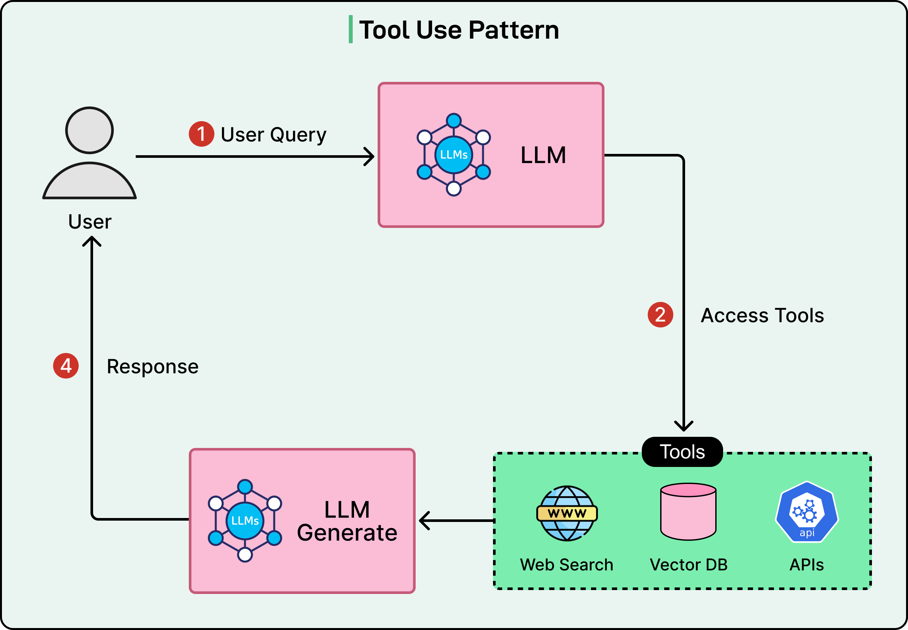
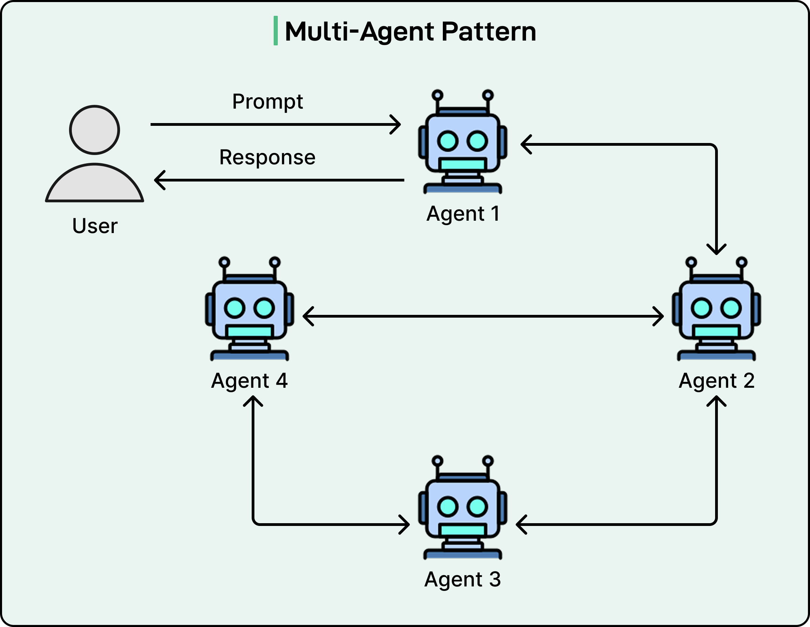

AI-TEAM
Using Coding Agents - Without Losing Control
Conway's Law Applied to Agentic Software Engineering
Agentic Workflows
Wie Coding Agents arbeiten
Beispiele heutiger Coding Agents
Tool Use Pattern
Reason and Act (ReAct)

Planning Pattern

Context Window

Grösseres Context Window = besser?
Überforderung
Zu viel Kontext überfordert das Modell – der Fokus geht verloren, die Antwortzeit steigt.
Lost in the Middle
Das Modell gewichtet Anfang und Ende stärker – relevante Inhalte in der Mitte werden übersehen.
Rauschen
Mehr Kontext führt zu Redundanz, Widersprüchen und verzerrten Schlussfolgerungen.
Weite Distanzen
Mit wachsendem Kontext fällt es dem Modell schwerer, weit auseinanderliegende Informationen zu verknüpfen.
Context Window

Das Problem
- Ein Agent → ein Context Window
- Ganzes Projekt in ein Context Window? Opus kann alles! ;)
- Subagents?
- Lazy RAG?
- Context Compression?
🤔
Wie schaffen wir fokussierte Agents?
Multi-Agent Pattern?

Conway's Law – Applied to AI
Organisation prägt Architektur
Conway's Law
Systeme spiegeln die Kommunikationsstruktur ihrer Organisation.
- klare Struktur → klare Software
- chaotische Struktur → chaotischer Code
🤔
Gilt das auch für Coding Agents?
Klare Verantwortung in Organisationen
- Fokus statt Überladung
- klare Zuständigkeiten
- bessere Kommunikation
- höhere Qualität
AI Team erschafft eine geeignete Agent Struktur
- klare Grenzen im virtuellen Team
- klare Grenzen im Code
- jeder Agent kennt seinen Scope
Veränderung und Optimierung
- Prioritäten verändern sich
- erfolgreiche Teams optimieren ihre Struktur laufend
AI-Team optimiert das Agententeam
- berechnet Verantwortlichkeiten
- misst Effektivität der Agenten
- schlägt bessere Strukturen vor
- erstellt neue Agenten bei Bedarf
Onboarding & Pair Programming
- Neue Entwickler (menschliche) brauchen Orientierung.
- Wer kennt sich wo aus?
- Welche Tools passen zu meiner Aufgabe?
AI-Team als Navigator
- CSS-Spezialist bekommt automatisch Playwright & Storybook
- Backend-Dev bekommt DB-Tools & Testrunner
- Passender Pair Programmer wird automatisch zugewiesen
- Entwickler finden sich sofort zurecht
Setup ist mühsam
- Prompts
- Tools
- Agent.md, Skill.md, instruction.md
- MCP
- Modelle
AI-Team macht es menschlich
- „hire react specialist“
- „hire db expert“
- „hire backend lead“
Die Komplexität bleibt unter der Haube.
Copilot oder Claude Code sind Datenkraken
- laden Unmengen an Code in die Cloud
- verlangen viel Geld für Token
- verursachen durch Verträge Vendor-Lockin
AI-Team:
- Open Source
- Bring Your Own Model
- Bring Your Own Provider
- Bestehende Subscriptions nutzbar
These
- heutige Agents sind mächtig – aber schlecht organisiert
- Context Pollution wird nicht weniger, wenn man dem LLM 100 Agenten und 1000 Skills zur Verfügung stellt
- Kontext aufräumen ist nur dann nötig, wenn er nicht von Anfang an aufgeräumt ist.
- Wir müssen Struktur in die Agentenlandschaft bringen
- Struktur schafft Qualität
- Gut organisierte Agenten bewirken eine gute Softwarearchitektur
- Conway's Law gilt auch für KI